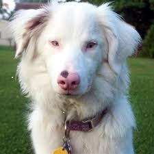
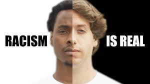

The most interesting part of the story is Trevor’s love for Fufi. After her mom was offered two puppies by some lady at work and brought them home, Trevor takes the initiative to raise Fufi and potty-trained her. When Fupi jumped over the wall Trevor decides not to watch at what was happening so he grabs his bicycle and follows her to see where he was going. Fupi end up jumping into a house in some part of the neighborhood backyard. Trevor goes ahead and rings the doorbell of that particular backyard so as to get back Fufi though it was in vain. After the colored kid denied that Fupi belonged to Trevor, he starts crying as well as begging Fufi but unfortunately Fupi was deaf to his pleas. Trevor decides to go back home
On arrival of her mom from work he tells her that Fupi had been kidnapped and they goes back to the house. mom confronts the colored kids mom but it all ends in vain even after providing an evidence of the certificates from the vet. Trevor’s mom ends up giving a hundred rand to the colored kids mom so as to get Fufi back. For the love that Trevor had for Fupi he says that no one had ever betrayed him more than Fufi and he was his first heartbreak.The effort that Trevor’s mother and Trevor puts so as to get back Fupi describes well the theme of love
Trevor and his mother had a very Tom and Jerry relationship beside the fact that his mother was the strict disciplinarian. Trevor’s mother was so loving that she could sneak out with Trevor and visit Robert and take him places black people never went.Robert also showed love to Trevor by celebrating his birthday together every year(he always had a birthday card) and chrismas as well. Robert would cook for Trevor his favorite meal whenever he visited him

Racism is clearly shown when one would dare own a cat in a black neighborhood, especially a black cat in a black neighborhood since that would be wearing a sign that said that the person owning the cat was a witch.
Trevor’s grandmother treated him as a white, his own family gave him lenient treatment than the black kids, misbehavior that Trevor’s cousins would have been punished for, Trevor was given a warning and let off while he was naughtier than either of his cousins
When Trevor left Maryvale to got to H.A Jack Primary things changed, the white kids used to move together in one direction, the black kids in another direction as compared to Maryvale where the kids were mixed up and hang out together.
When Trevor’s mother was taken to the delivery room, her belly cut open and pulled Trevor out ,a quick scan of the delivery room revealed that the child was half white and half black who violated a number of laws, statues and regulations. The doctors couldn’t believe Patricia’s words that the father to the child was from Swaziland. Trevor’s mother had to lie to the doctors because under apartheid, the government labeled everything on your birth certificate and if it happened that the certificate described Trevor as a Swiss the government wouldn’t allow
When Trevor’s parents went with him to visit Joubert park when he was a toddler, Robert would walk away from them and the moment Trevor screamed to his dad people started looking and he would panic and run away. Trevor could not walk with his mother either; a light-skinned child with a black woman would raise too many questions .
When Trevor was a newborn, her mother had to wrap him up so as to take him anywhere

Trevor grew up in South Africa during apartheid ,which was awkward because he was raised up in a mixed family, with him being the mixed one in the family. His mother, Patricia Nombuyiselo Noah, is black and his father ,Robert was white .Swiss/German ,to be precise, which Swiss/Germans invariably are. During apartheid, one of the worst crimes you could commit was having sexual relations with person of another race and needless to say, my parents committed that crime